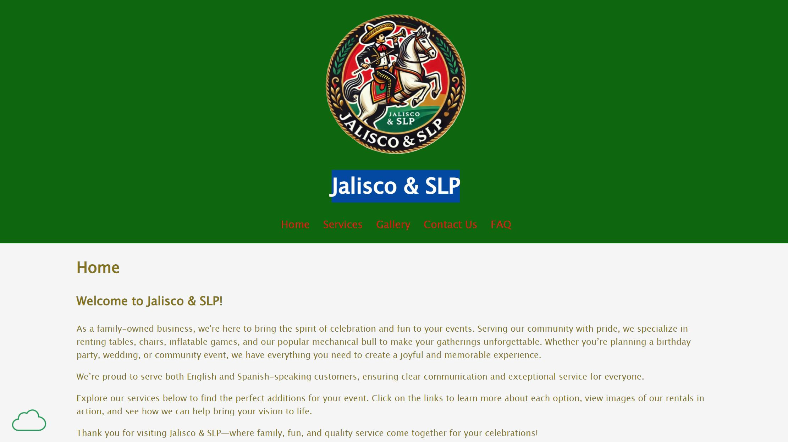

Review 1: Vidal, Jazmin

Jalisco & SLP
- Submission goes to right place
- No spaces in file/folder names
- Design:
- Page does have sufficient contrast and font sizing, but red links can be a little difficult to read
- Page uses its own css file
- CRAP:
- Contrast is good
- Menus are repetitive
- Pages are aligned properly
- Relevant items are close in proximity
- Page has within it:
- Page has header
- Page has footer
- Page has main
- Page has navbar
- Header has brand in header with h1
- Main starts with an h2
- Page is missing tagline
- Page has footer with all necessary elemements
Suggestions/Comments:
- Consider a different color or a different shade of red for the links. The color you chose can be a little hard on the eyes.
- Add more pictures for your gallery!! Also some pictures are lower quality and are blurry or have poor angles.